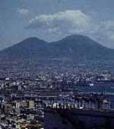

Annotations Chapter 9

Chapter 9
John D’Agostini
"Oui? Capitaine, un agent du Departement de Cryptographie est arrive."
Agent Neveu
Parisian dechiffreuse
"Excusez-moi, messieurs."
Anglo-Franco accent
"Ce n'est pas le moment!"
"Bonjour, vous etes bien chez Sophie Neveu, Je suis absente pour le moment, mais…"
Surveillance cache A surveillance database used for storing secret information in a computer. http://www.m-w.com/cgi-bin/dictionary?book=Dictionary&va=cache
"Oui? Capitaine, un agent du Departement de Cryptographie est arrive." Yes? Captain, an agent of the Department of Cryptography east has arrived. http://world.altavista.com/tr
Agent Neveu In the novel a Cryptographer and member of the DCPJ. Niece of Jacques Sauniere. Works with Robert Langdon to solve her uncle’s murder. Graduated from the Royal Halloway College in London England. Very strong character who is headstrong on uncovering the mysterious death of her uncle. She is able to decipher many puzzles along the way to find the truth.
DCPJ- see chapter 1
Parisian dechiffreuse Parisian cryptographer [deciperer]
Royal Holloway A University in London (known as the University of London) founded by an entrepreneur named Thomas Halloway. It merged with Bedford College in 1849 to form the University of London. It is well known for its research and development and is a research extensive university. It has many majors in the fields of Social Sciences, History, Science, and the Arts. Over 5,500 students attend the college whose campus lies in London. See www.rhbnc.ac.uk.
http://www.rhul.ac.uk/Index.html
"Excusez-moi, messieurs." Excuse me, gentleman. http://world.altavista.com/tr
Anglo-Franco accent- French American accent.
"Ce n'est pas le moment!" This is not the moment! http://world.altavista.com/tr
Mount Vesuvius An active volcano that rises above the Bay of Naples on the plane of Campania in Southern Italy. The Volcano has been dormant for many years and is thought to be about 200,000 years old. Its last eruption was in 79 AD where it wiped out many villages and killed close to 3,000 people. In 1631 it had a flurry of earthquakes that affected the area. It has very rich soil and is used for the making of wine.

http://search.eb.com/eb/article?tocId=9075197&query=Mount%20Vesuvius&ct=
"Bonjour, vous etes bien chez Sophie Neveu, Je suis absente pour le moment, mais…" “Hello you have reached the home of Sophie Neveu, I am not here at the moment, but…” http://world.altavista.com/tr